🎵 Descubra o seu potencial musical com as nossas guitarras excepcionais! 🎵
Se você é um amante da música, sabe que uma guitarra é muito mais do que apenas um instrumento. Ela é a extensão da sua expressão artística, o veículo para transmitir suas emoções e canalizar sua criatividade. Aqui, na nossa loja de guitarras, entendemos a importância desse vínculo especial e estamos empenhados em oferecer instrumentos de alta qualidade que elevem a sua música a um novo patamar.
🌟 Qualidade sem Compromisso 🌟
Nossas guitarras são construídas com os mais altos padrões de qualidade, utilizando materiais premium e técnicas de fabricação de última geração. Cada detalhe é cuidadosamente pensado para garantir que você tenha em mãos um instrumento duradouro, confiável e com um som incrível. Nós nos orgulhamos de oferecer guitarras que são verdadeiras obras de arte, desde os clássicos designs vintage até os modelos mais modernos e inovadores.
💥 Variedade de Estilos e Modelos 💥
Independentemente do seu estilo musical, temos a guitarra perfeita para você. Se você é um fã do rock clássico, nossas guitarras com corpo sólido e captadores poderosos vão fazer você sentir a energia das lendas do passado. Se o seu coração bate mais forte pelo blues, nossos modelos semi-acústicos oferecem aquele timbre suave e cheio de alma que vai te transportar para outro mundo. E se você é um virtuoso do metal, nossas guitarras de alta performance vão proporcionar a agressividade e a velocidade que você precisa para arrasar nos solos mais intensos.
🎶 Acompanhando o Seu Crescimento 🎶
Entendemos que o seu relacionamento com a música é uma jornada contínua, e estamos aqui para acompanhá-lo em cada etapa do seu desenvolvimento. Seja você um iniciante entusiasmado ou um músico experiente, nossa equipe de especialistas está pronta para ajudá-lo a escolher a guitarra perfeita, adaptada às suas necessidades e orçamento. Além disso, oferecemos uma ampla gama de acessórios, como amplificadores, pedais de efeito e cordas de alta qualidade, para que você possa personalizar o seu som e explorar novas possibilidades musicais.
🔥 Faça Parte da Nossa Comunidade Musical 🔥
Ao escolher uma de nossas guitarras, você se torna parte de uma comunidade apaixonada por música. Oferecemos workshops, eventos exclusivos e a oportunidade de conhecer outros músicos talentosos que compartilham a mesma paixão. Além disso, nossa equipe de suporte está sempre à disposição para responder suas perguntas e ajudá-lo no que for preciso.
🚀 Liberte seu Potencial Criativo - Adquira Sua Guitarra Hoje Mesmo! 🚀
Não espere mais para levar a sua música para o próximo nível. Venha visitar nossa loja de guitarras e descubra o instrumento dos seus sonhos. Permita!
MODELOS
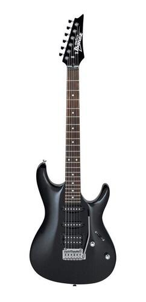
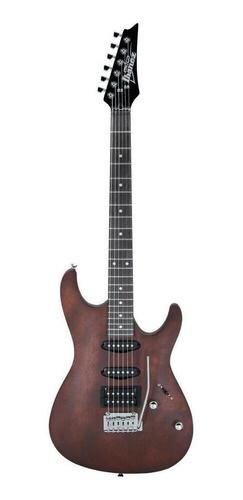
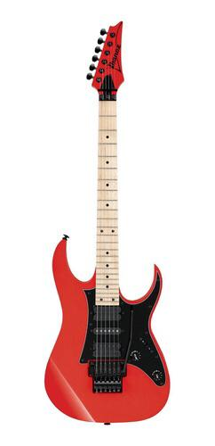
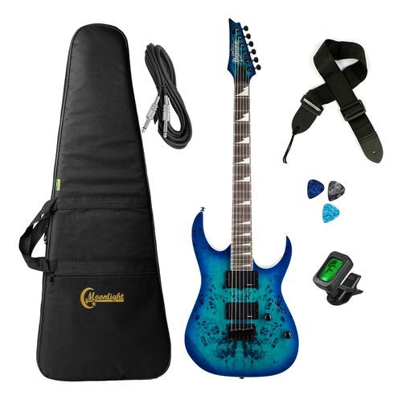
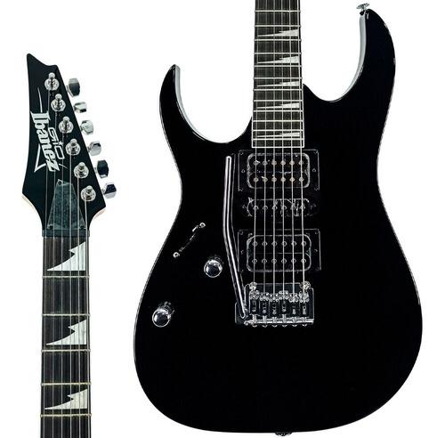
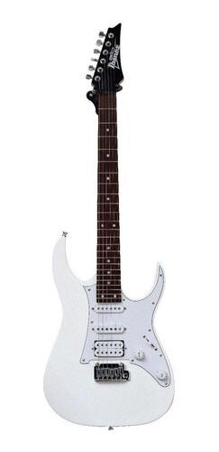
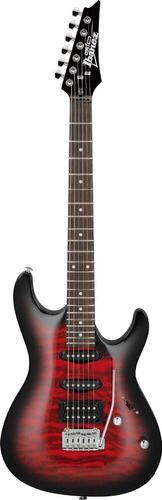
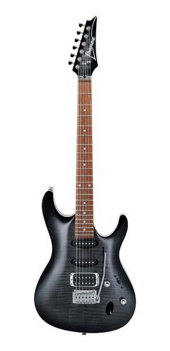
BAIXOS
🎸 Contrabaixos de Excelência: O Ritmo Profundo da sua Música 🎸
🎵 Descubra a força e o poder do seu som com nossos contrabaixos de alta qualidade! 🎵
Se você é apaixonado pelo ritmo pulsante e pela fundação sólida de uma banda, sabe que o contrabaixo é o coração da música. É o instrumento responsável por dar aquele groove irresistível e sustentar a harmonia de cada nota. Aqui, na nossa loja de contrabaixos, entendemos a importância desse papel fundamental e estamos comprometidos em oferecer instrumentos excepcionais que elevarão sua música a novos patamares.
Nossos contrabaixos são construídos com os mais altos padrões de qualidade, utilizando materiais premium e técnicas de fabricação de ponta. Cada instrumento é meticulosamente ajustado para garantir uma resposta precisa, um timbre encorpado e uma tocabilidade confortável. Nós nos orgulhamos de oferecer contrabaixos que são verdadeiras obras de arte, desde os modelos clássicos até os designs mais modernos e inovadores.
💥 Variedade de Estilos e Timbres 💥
Independentemente do seu estilo musical, temos o contrabaixo perfeito para você. Se você é fã do groove funk, nossos contrabaixos de escala curta e captadores cheios de punch vão fazer você sentir a batida no seu peito. Se o seu coração bate mais forte pelo jazz, nossos modelos de corpo oco proporcionam aquele timbre quente e articulado que é a marca registrada dos grandes mestres. E se você é um roqueiro de raiz, nossos contrabaixos de corpo sólido e timbre agressivo vão te levar para o centro do palco com poder e atitude.
MODELOS
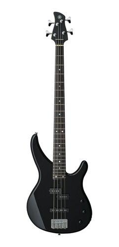
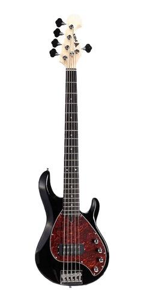
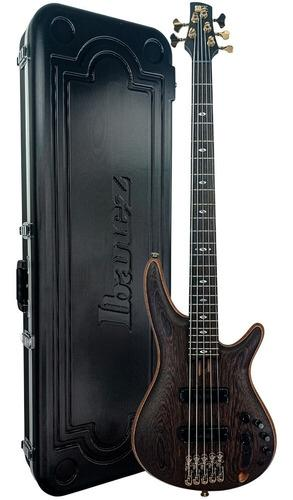
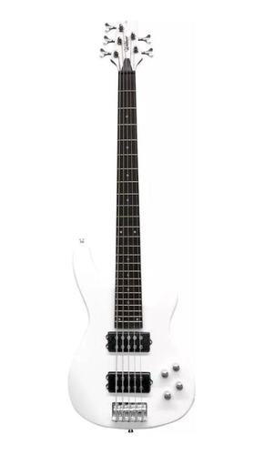
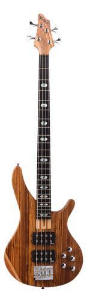
VIOLÕES
🎸 Violões Excepcionais: Descubra a Magia da Música 🎸
🎵 Encontre a sua identidade musical com os nossos violões de alta qualidade! 🎵
Todos nós sabemos que o violão é um instrumento versátil e encantador. Ele possui a capacidade de transmitir emoções profundas, criar melodias cativantes e acompanhar histórias através de suas cordas. Aqui, em nossa loja de violões, compreendemos a importância desse instrumento especial e estamos comprometidos em oferecer violões de qualidade excepcional que vão inspirar a sua musicalidade.
Independentemente do seu estilo musical, temos o violão perfeito para você. Se você é apaixonado pelo som quente e suave do folk, nossos violões de corpo pequeno e timbre acústico profundo são ideais para você expressar suas emoções mais profundas. Se você é um amante do blues e do rock, nossos violões de corpo grande e captadores potentes vão adicionar aquele toque de energia e atitude ao seu som. E se você é um músico eclético, nossos violões eletroacústicos oferecem a versatilidade de tocar tanto acusticamente quanto amplificado.
MODELOS
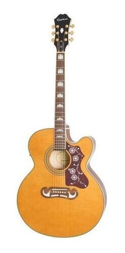
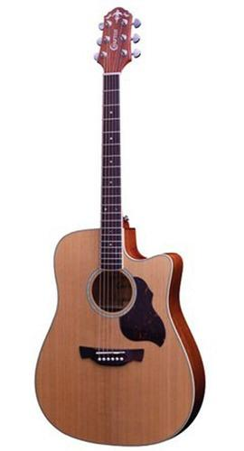
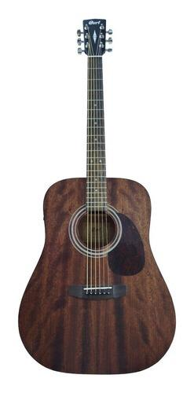
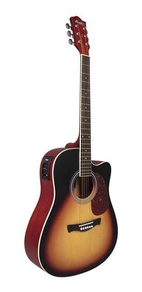
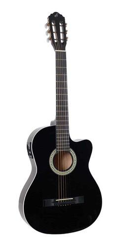
UKULELE
🎵 Ukuleles Encantadores: Descubra a Alegria Musical 🎵
🌺 Deixe a música fluir com os nossos ukuleles de qualidade excepcional! 🌺
O ukulele é um instrumento que transmite alegria instantânea. Suas notas suaves e cativantes evocam imagens de praias ensolaradas, festas descontraídas e momentos de pura diversão. Aqui, em nossa loja de ukuleles, entendemos a magia desse instrumento encantador e estamos comprometidos em oferecer ukuleles de alta qualidade que vão inspirar o seu espírito musical.
🌟 Qualidade Superior, Som Maravilhoso 🌟
Nossos ukuleles são construídos com atenção aos detalhes, utilizando madeiras de alta qualidade e técnicas de fabricação refinadas. Cada ukulele é meticulosamente ajustado para oferecer um som doce e equilibrado, com excelente projeção e ressonância. Estamos orgulhosos de oferecer ukuleles que são verdadeiras joias, desde os modelos tradicionais até os designs mais modernos e exclusivos.
Independentemente do seu estilo musical ou preferências estéticas, temos o ukulele perfeito para você. Se você deseja capturar o espírito havaiano clássico, nossos ukuleles de tamanho soprano são ideais, com seu som brilhante e tamanho compacto. Se você busca um tom mais encorpado e graves profundos, nossos ukuleles de tamanho tenor proporcionam uma experiência sonora envolvente. E se você está em busca de versatilidade, nossos ukuleles eletroacústicos combinam a sonoridade tradicional com a capacidade de amplificação, permitindo que você se apresente em qualquer lugar.
🎶 Divirta-se e Cresça Musicalmente 🎶
Acreditamos que a música deve ser uma experiência divertida e enriquecedora. Esteja você começando sua jornada musical ou aprimorando suas habilidades, nossa equipe de especialistas está pronta para ajudá-lo a encontrar o ukulele perfeito, adequado às suas necessidades e orçamento. Além disso, oferecemos uma variedade de acessórios, como capas protetoras, afinadores e livros de acordes, para que você possa aprimorar sua técnica e explorar novas melodias.
 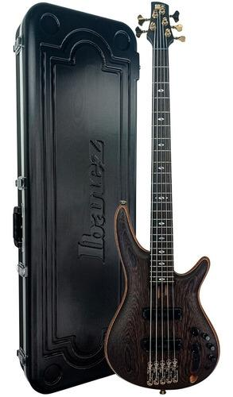
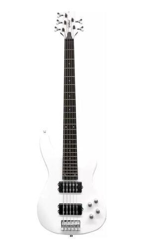
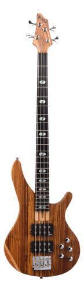
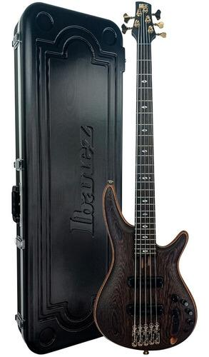
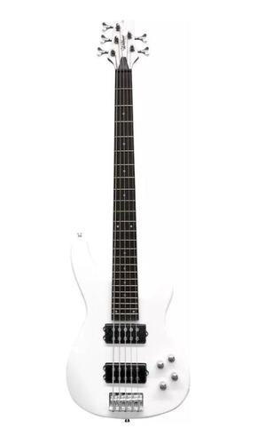
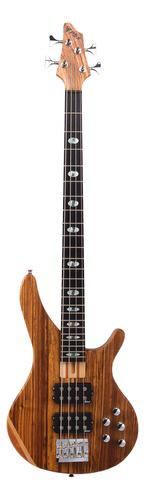
 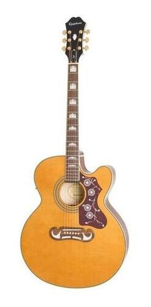
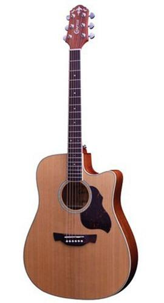
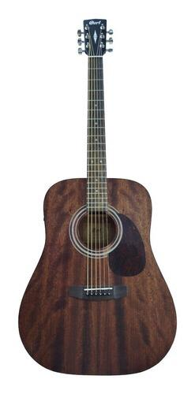
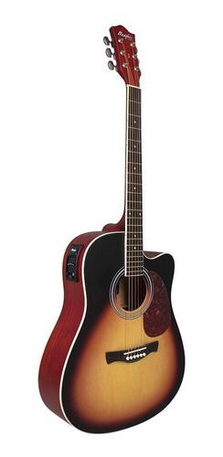
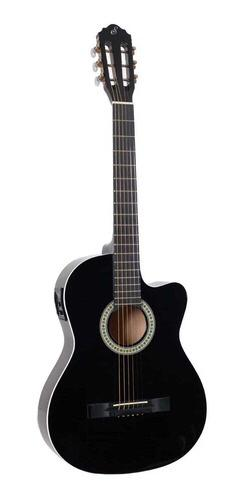
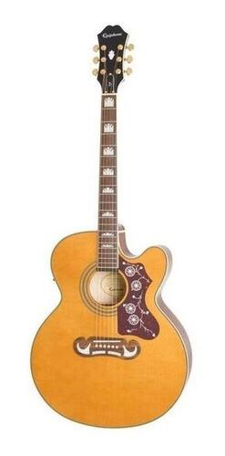
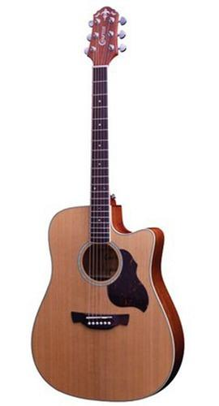
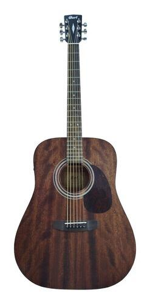
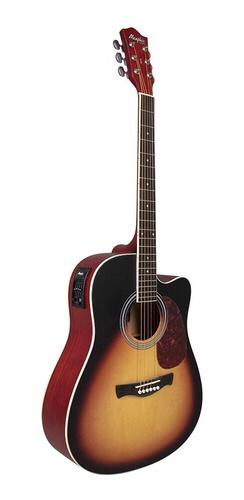
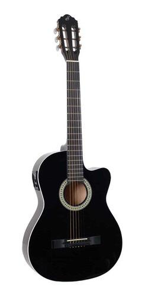